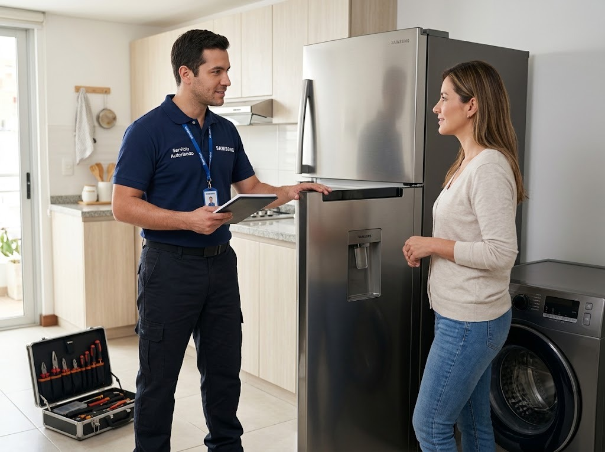
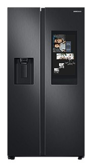

Servicio técnico de neveras Samsung en Panamá
Reparamos neveras y refrigeradoras Samsung a domicilio en Ciudad de Panamá: de dos puertas (Side by Side), French Door, de congelador superior o inferior y modelos con dispensador de agua y hielo.

Qué neveras Samsung reparamos


- Side by Side (dos puertas verticales)
- French Door (puertas dobles arriba y cajón de congelador abajo)
- Congelador superior (Top Mount)
- Congelador inferior (Bottom Mount)
- Modelos con dispensador de agua y fábrica de hielo
- Modelos con compresor inverter
Cómo trabajamos en la nevera Samsung
Revisamos el equipo en tu casa, te explicamos la falla y el costo antes de empezar y reparamos con garantía sobre la pieza y la mano de obra.
Fallas comunes de neveras Samsung y su causa probable
Estas son las que más vemos en Panamá. Si tu equipo tiene otro síntoma, escríbenos.
| Síntoma | Causa probable | Urgencia |
|---|---|---|
| La nevera no enfría | Falla del ventilador del evaporador, escarcha que tapa la circulación de aire, sensor de temperatura, tarjeta de control o compresor. | Urgente |
| El congelador se llena de escarcha | Falla del sistema de descongelación (resistencia, termostato de deshielo o tarjeta), o empaque de la puerta que no sella. | Revisar pronto |
| Gotea agua dentro de la nevera | Desagüe de descongelación tapado o congelado, o bandeja de drenaje en mal estado. | Revisar pronto |
| Hace ruido o zumbido fuerte | Ventilador con hielo o desgastado, compresor que arranca con dificultad, o la nevera mal nivelada. | Revisar pronto |
| El dispensador no saca agua | Filtro de agua vencido, manguera congelada o válvula de entrada de agua. | Vigilar |
| No hace hielo o hace poco | Fábrica de hielo congelada, válvula de agua, sensor o temperatura del congelador fuera de rango. | Vigilar |
| Se enciende la luz del filtro o suena una alarma | Aviso de cambio de filtro o puerta que no cierra bien. | Vigilar |
| Se apaga y prende sola, o salta el breaker | Variaciones de voltaje, compresor con falla de arranque o tarjeta de control. | Urgente |
| Huele mal por dentro | Alimentos derramados, drenaje sucio o filtro de olores saturado. | Vigilar |
| La pantalla Family Hub no enciende o se congela | Software de la pantalla bloqueado, Wi-Fi inestable o tarjeta de la pantalla. | Vigilar |
| El compresor Digital Inverter hace ruido o vibra | Compresor inverter, nevera desnivelada o contacto con la pared. | Revisar pronto |
Todo sobre la nevera Samsung
Más sobre neveras Samsung
Fallas de neveras Samsung
Neveras Samsung por zona
Guías sobre neveras Samsung
Nevera Samsung no enfría: causas y qué revisar
Si tu nevera Samsung no enfría o enfría poco, estas son las causas más comunes y qué puedes revisar antes de llamar.
Leer →Escarcha en el congelador de la nevera Samsung: por qué pasa
Por qué se forma escarcha en el congelador, cuándo es normal y cuándo indica una falla de descongelación.
Leer →Cortes de luz y variaciones de voltaje: cómo proteger tus electrodomésticos
Los picos de voltaje y los cortes de luz dañan tarjetas y compresores. Cómo protegerte.
Leer →Lo que más buscan sobre neveras Samsung en Panamá
Servicio técnico de neveras y refrigeradoras Samsung en Panamá
Si tu nevera Samsung dejó de enfriar, hace ruido, forma escarcha o el dispensador de agua no funciona, nuestro técnico de refrigeradoras Samsung va a tu casa en Panamá para revisarla. Atendemos neveras de congelador superior (Top Mount), congelador inferior (Bottom Mount), Side by Side, French Door y modelos con pantalla Family Hub, con o sin dispensador de agua y hielo.
Reparación de refrigeradoras Samsung: fallas que atendemos
Las consultas más frecuentes son: la nevera no enfría o enfría poco, el congelador se llena de escarcha, la refrigeradora gotea agua por dentro, se escucha un zumbido fuerte del ventilador o del compresor, no hace hielo, la luz del filtro de agua se enciende y la nevera se apaga y prende sola. En cada caso revisamos sensores, ventilador del evaporador, resistencia de descongelación, tarjeta de control, empaques y sistema de agua antes de proponer la reparación.
Mantenimiento de neveras Samsung con el clima de Panamá
El calor y la humedad de Panamá obligan al compresor y a las rejillas a trabajar más. Limpiar el polvo del condensador, revisar que las puertas sellen bien, no sobrecargar el congelador y proteger la nevera de bajones de voltaje alarga su vida útil. Si hace tiempo no le haces mantenimiento a tu nevera Samsung en Panamá, agenda una revisión preventiva.
Neveras Samsung con dispensador de agua y fábrica de hielo
Los modelos con dispensador pueden fallar por filtro de agua vencido, manguera congelada o válvula de entrada de agua. También atendemos la fábrica de hielo que no produce o produce poco. Si tu nevera Samsung muestra una alarma o un código en la pantalla, escríbenos el modelo y el código por WhatsApp y te orientamos.
¿Cuánto cuesta reparar una nevera Samsung en Panamá?
El costo depende de la falla, la pieza y el modelo. Te confirmamos el valor de la visita antes de ir y el de la reparación antes de empezar. Si la nevera es muy antigua y la reparación no conviene, te lo decimos con claridad para que decidas.
Preguntas frecuentes
¿Cuánto tarda una reparación de nevera Samsung?
Depende de la falla. Muchas reparaciones se hacen en la misma visita; si hay que conseguir una pieza, te avisamos el plazo antes de empezar.
¿Reparan neveras Side by Side y French Door?
Sí. Atendemos neveras Samsung de dos puertas, French Door y de congelador superior o inferior.
¿Por qué mi nevera Samsung no enfría pero el congelador sí?
Normalmente el aire frío no está llegando a la parte de abajo: ventilador, escarcha o sensor. Es una de las fallas más comunes.
¿Cada cuánto debo cambiar el filtro de agua?
Cada 6 meses, o antes si el agua sale lenta o con mal sabor.
¿Vale la pena reparar una nevera vieja?
Si la falla es de una pieza accesible, casi siempre sí. Si el compresor está dañado y el equipo es muy viejo, te explicamos las opciones con honestidad.
¿Trabajan con garantía?
Sí, cada reparación incluye garantía sobre la pieza y la mano de obra; el plazo se confirma antes de empezar.
¿Reparan neveras Samsung Family Hub?
Sí, atendemos neveras Samsung Family Hub, French Door, Side by Side y de congelador superior o inferior.
¿Qué hago si mi nevera Samsung no conecta a SmartThings?
Revisa que el router esté en 2.4 GHz, reinicia ambos equipos y repite el emparejamiento; si sigue, escríbenos.
¿Tu nevera Samsung tiene una falla?
Escríbenos por WhatsApp con el equipo, el modelo y la falla. Te confirmamos disponibilidad para tu zona en minutos.